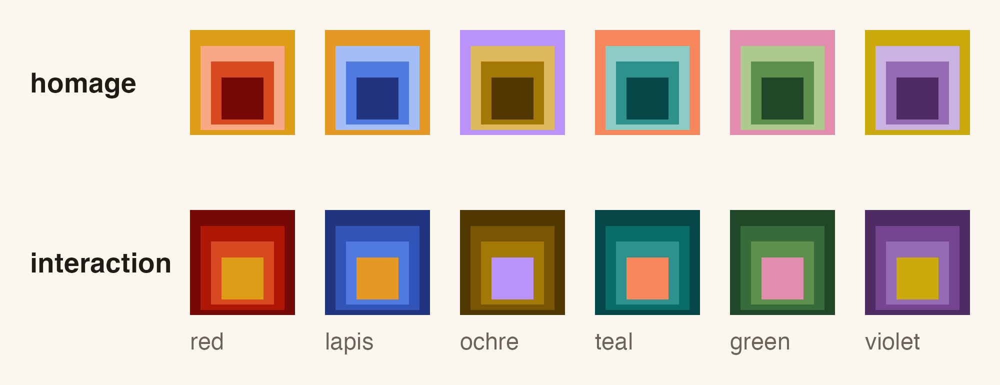

A vignette and pkgdown theme for R packages, built on Josef Albers’s Interaction of Color. Each vignette gets a title plate in the Homage-to-the-Square proportions, numbered sections, a margin column for notes, legible code output, booktabs tables, and matching ggplot2 figures, in light and dark. Vignettes stay self-contained and CRAN-safe: fonts and scripts are embedded, and equations are written as MathML, so nothing is fetched when the page is read.

The documentation site is built with the theme.
Vignettes
In the vignette’s YAML header:
output:
albersdown::albers_vignette:
family: teal # red, lapis, ochre, teal, green, violet
preset: homage # homage (warm, serif) or interaction (cool, grotesk)and in DESCRIPTION:
Suggests:
albersdown (>= 2.1.0),
knitr,
rmarkdown
VignetteBuilder: knitrThat is all. albers_vignette() is new in albersdown 2.1.0, hence the version bound. If a vignette build fails with 'albers_vignette' is not an exported object from 'namespace:albersdown', the albersdown being used is 2.0.0 or older (R does not enforce Suggests versions when building): update it with install.packages("albersdown").
The format sets knitr defaults, uses theme_albers() for plots while the vignette renders, renders a dark version of each ggplot for readers in dark mode, and draws each plot a second time at phone width so its text stays legible on a phone. Scales follow the vignette’s family:
ggplot(mtcars, aes(wt, mpg, colour = factor(cyl))) +
geom_point() +
albersdown::scale_color_albers()Writing a vignette
Ordinary R Markdown, plus a few conventions the theme understands:
-
Callouts:
::: {.callout .callout-tip}(alsocallout-note,callout-warning,callout-danger) with a bold first word as the label. -
Margin notes: footnotes (
[^1]) are also set in the right margin on wide screens. -
Wide blocks: wrap a chunk or table in
::: {.wide}to use the margin column;class.source = "wide"widens one chunk’s code. -
Sections are numbered; add
{.unnumbered}to a heading to skip one. - Math is written as MathML, so it renders offline.
Margin notes and .wide blocks use the margin column of the vignette layout; on a pkgdown site, footnotes use pkgdown’s own popovers.
What it adds to a vignette: about 158 KB of embedded fonts for Homage (131 KB for Interaction) and about 176 KB of stylesheet and script, so a vignette with one short chunk and no plot is about 335 KB (Homage) or 309 KB (Interaction). Each plot then adds its image several times: a dark version of each ggplot (dark_figures = FALSE turns it off) and a phone-width drawing of each plot, light and dark (phone_figures = FALSE turns it off). For a simple geom_point() plot that is about 77 KB for the light and dark figures plus about 66 KB for their phone versions, so a one-plot vignette is about 480 KB (Homage). The same cost lands in the package tarball for every vignette. Plots drawn with print(p) or base graphics, and plots in chunks with fig.show = "hold", "animate" or "hide", get no dark version (they stay light in dark mode).
To start a new vignette from the template: rmarkdown::draft("vignettes/intro.Rmd", template = "albers_vignette", package = "albersdown"), or File > New File > R Markdown > From Template > Albers Vignette in RStudio.
pkgdown sites
In _pkgdown.yml:
and Config/Needs/website: bbuchsbaum/albersdown in DESCRIPTION. Neither is read by R CMD check, so a CRAN package can theme its site this way without changing its vignettes or dependencies. The site build needs albersdown 2.1.0 or later: Config/Needs/website makes a pkgdown CI workflow install it from GitHub. With albersdown 2.0.0 installed, pkgdown builds a plain Bootstrap site without an error. Plots in articles keep your own ggplot2 theme on this route. Articles written with albers_vignette() keep their own family on the site. To change the site-wide default family, re-run use_albersdown() with that family (it writes pkgdown/extra.js), or add to _pkgdown.yml:
Plots and tables outside vignettes
-
theme_albers(family, preset, mode = c("light", "dark"))for ggplot2. -
scale_color_albers(),scale_fill_albers(): the family paired with its complement (type = "family"for a single-hue ramp);albers_discrete()returns the colours. -
gt_albers()for gt tables;albers_bs_theme()for bslib/Shiny.
Install
install.packages("albersdown")
# or the development version:
pak::pak("bbuchsbaum/albersdown")Existing packages
albersdown::use_albersdown(".", family = "teal", preset = "homage")switches each vignette that uses rmarkdown::html_vignette to albersdown::albers_vignette (Quarto, bookdown, flow-style output: {...} headers and vignettes whose first format is something else are reported and left alone; articles in vignettes/articles/ need output: albersdown::albers_vignette set by hand), adds albersdown (>= <installed version>) (in Suggests, or where albersdown is already in Imports/Depends) and the other Suggests and VignetteBuilder entries (plus Remotes: bbuchsbaum/albersdown when the installed albersdown is a development version), and points _pkgdown.yml at the template. When no vignette ends up on the format (none to convert, or apply_to = "new"), only _pkgdown.yml and Config/Needs/website change: the site-only route. A package set up by albersdown 2.0 is migrated (called without family/preset, the helper keeps the family and direction the package already uses, and says where it found them): its setup-chunk lines, params, generated pkgdown/extra.css/extra.js and README note are replaced, and the copied assets in vignettes/ are moved out. The edits are textual (other output formats, comments, key order and line endings are kept), each changed file is backed up to .albersdown.bak/ (which, with _pkgdown.yml, is added to .Rbuildignore; .albersdown.bak/ also goes in .gitignore), and dry_run = TRUE shows what would change. readme = TRUE adds a short note to README.Rmd (re-knit it) or, without one, README.md. method = "vendor" keeps the older setup that copies the stylesheet and script into vignettes/.